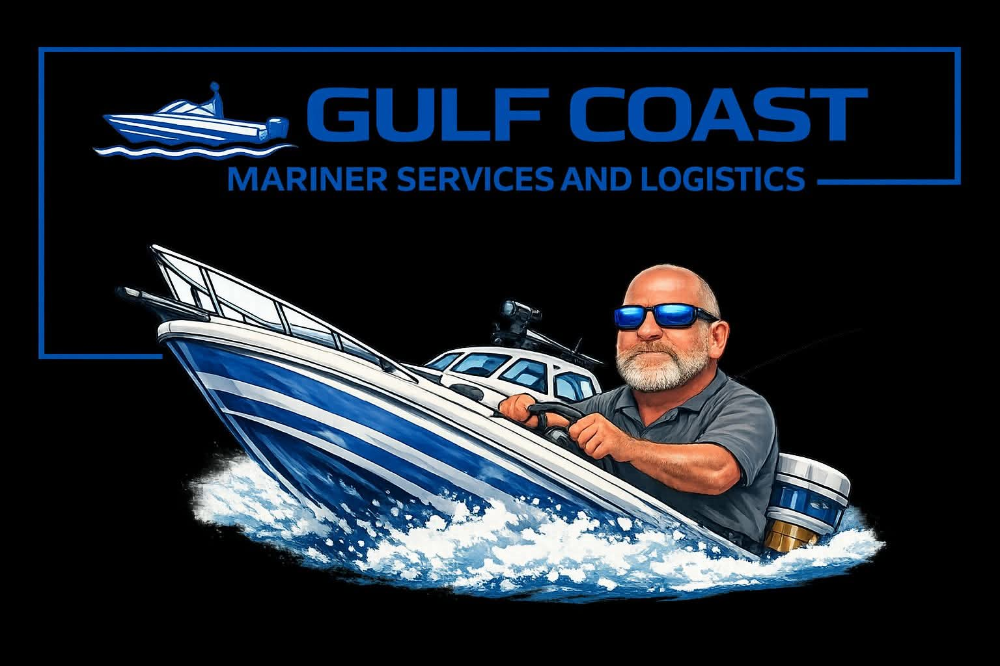

Gulf Coast Mariner Academy & Boating Instruction
Serving the Coastal Bend — Corpus Christi, Aransas Pass, Rockport
Contact Captain James:
captjames@gulfcoastmarinertx.com • Call/Text: 361‑717‑1225
Private boating instruction with Captain James — calm, patient, and over 25 years of maritime experience.
Professional mariner training and OUPV courses along the Texas Gulf Coast.
Gulf Coast Mariner Academy is the captain school division of Gulf Coast Mariner Services & Logistics, providing USCG-focused training and maritime education.
Commercial and private maritime support services along the Texas Gulf Coast.
USCG Master 100-Ton Near Coastal. Calm, experienced instructor with over 25 years on the water.
Professional boating instruction, captain school training, and maritime services across the Texas Coastal Bend.
Book TrainingGulf Coast Mariner Academy provides professional maritime education, hands‑on boating instruction, and operational support services across the Texas Coastal Bend. Our mission is to help mariners at every level — from new recreational boaters to commercial operators — build confidence, improve safety, and operate with real‑world skill.
Through Boating Basics & Beyond, we offer practical on‑water training for new boat owners and families. Our Mariner Services & Logistics division supports vessel owners, marinas, and marine businesses with crewing, consulting, and operational assistance. As we expand the Academy, we are developing USCG‑approved captain school programs to serve the next generation of professional mariners.
Captain James Chadwick is a U.S. Coast Guard 100‑Ton Master Captain with more than 25 years of experience on the water. He’s spent his career operating a wide range of vessels across the Texas Gulf Coast and beyond.
James spent over a decade running 110–200 ft supply boats and crew boats in the Gulf of Mexico, gaining real‑world knowledge in vessel handling, navigation, and safety. He also served as a captain for the Port Aransas Ferry System, where close‑quarters maneuvering and precision were part of every shift.
Today, James continues to work operational shifts with Sea Tow, adding emergency response and vessel recovery experience to his background. His calm teaching style and deep familiarity with local waters make him a trusted instructor for new boaters looking to learn safely and confidently.
Hands-on, on-water training for new boaters — navigation, safety, docking, confidence-building, and real-world seamanship skills. Perfect for families, new boat owners, and recreational boaters wanting safe, professional instruction.
Book Training★★★★★
“Captain James has been instructing some of us at Texas A&M University–Corpus Christi and I highly recommend him for boating instruction. Before working with Captain James, I had never driven a boat, but he taught me everything I needed to know to operate safely and helped me build the skills and confidence I needed. He gives clear directions, is excellent at communication, and is patient and understanding with different experience levels. He creates a calm, supportive environment that reduces stress and provides thoughtful exercises to help develop boating skills. It has been a great learning experience.”
★★★★★
“I bought my first skinny water boat. Shoalwater 19 cat. I have had boats for years, but never a boat with a jack plate. This was intimidating for me. I went out with James to master this boat. James taught me how to make this boat safely perform as it should. After spending time on the water. If feel more safe and confident running this boat. I Highly recommend his services.”
★★★★★
“Thank you so much for a great experience and making this training happen! Will work with your schedule, great deals, and very helpful! Also very detailed instructions that leave you feeling confident in boating. Thanks a ton, Captain Chadwick!”
★★★★★
“Captain James was an excellent instructor, clear, patient, and highly experienced. As a complete beginner, I felt safe, learned a lot, and had a great time. He’s also just a genuinely kind person, which made the whole session even better. I didn’t have my own boat, so I rented one from Little Bay Marine LLC, who offer a discount on rentals if you're taking a lesson with James. Great setup all around, highly recommend!”
★★★★★
“Captain James has been showing me the ropes for the last two years and taught me everything I needed to know—not just how to drive the boat, but how to really be a captain. He gave me space to mess up, learn, and get better, and I’m honestly ready now because of him. Big shoutout to Cap for always having my back and putting in the time.”
★★★★★
“I feel much more confident in safely handling my boat, Capt Chadwick is a great instructor. I’m going to take a follow up session to become more familiar with local navigation now that I’m confident in boat handling.”
★★★★★
“I purchased my first boat in April 2023 and needed help learning how to operate it. GCMS helped me learn at my pace, maneuvering movements, and verbal instruction. I never felt uncomfortable or inadequate while learning. I’ve been using the service for several months and it’s money well spent. I plan to continue using it into 2024. Thank you GCMS 🙏”
★★★★★
“Captain James has been a captain for over 20 years and is 100 ton Master Licensed. His instructor professionalism has made him popular with the boating community. He does one on one boat training to teach my husband how to dock, reverse and trailer our Pontoon boat. There is no better boating and safety instructor in my opinion.”
★★★★★
“The class was amazing, I learned a lot of stuff I highly recommend it. If you are wanting to get into boats 🙏”
★★★★★
“Awesome instructor I like how he goes over the material for regular peoples terms and was surprised to see so many other captains in the class getting refresher boating course along side with us and made it super fun and hands on ...... a must have for any new or everyday boater thanks Capt”
★★★★★
“Great teacher, did very well teaching my son the basics of boating and safety.”
★★★★★
“Excellent service and very informative. Highly recommend for new and experienced boaters to further your education.”
★★★★★
“bought my first skinny water boat. Shoalwater 19 cat. I have had boats for years, but never a boat with a jack plate. This was intimidating for me. I went out with James to master this boat. James taught me how to make this boat safely perform as it should. After spending time on the water, I feel more safe and confident running this boat. I highly recommend his services.”